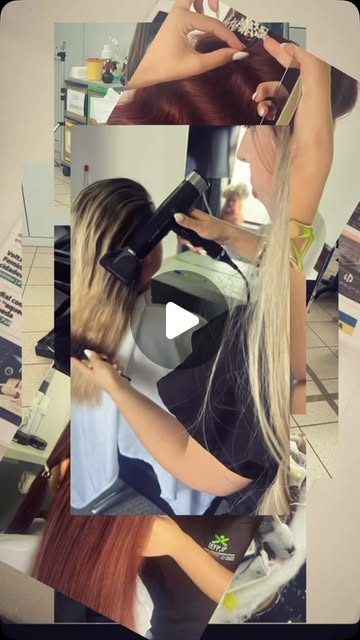
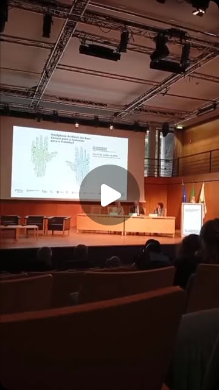

Jovens
Cursos de aprendizagem com certificação escolar e profissional, para quem tem entre 14 e 29 anos.
Saber mais sobre formação para jovens (abre num novo separador)#riomeaocontigo
Cursos para jovens a partir dos 14 anos e para adultos, empregados ou desempregados. Ficamos na Av. de Santiago, em Rio Meão.

Cursos de aprendizagem com certificação escolar e profissional, para quem tem entre 14 e 29 anos.
Saber mais sobre formação para jovens (abre num novo separador)Cursos EFA para completar a escolaridade e ganhar uma qualificação profissional ao mesmo tempo.
Saber mais sobre formação para adultos (abre num novo separador)Já tens experiência de trabalho? O processo RVCC reconhece o que aprendeste e pode dar-te um certificado escolar ou profissional.
Saber mais sobre o Centro Qualifica (abre num novo separador)
O Serviço de Formação Profissional de Rio Meão faz parte do Centro de Emprego e Formação Profissional de Entre Douro e Vouga, do IEFP. Aqui há cursos para jovens e adultos e um Centro Qualifica.
Como todo o IEFP, o centro existe para ajudar as pessoas a ganhar qualificações e a encontrar emprego, através da formação profissional.
Alguns dos cursos com início previsto para o outono de 2026. A lista completa está no iefponline (abre num novo separador).
Ciências Informáticas
Curso do Sistema de Aprendizagem para jovens dos 14 aos 29 anos. Dá equivalência ao 12.º ano.
Saber mais sobre Técnico/a de Desenvolvimento de SoftwareMetalurgia e Metalomecânica
Curso de nível 5 para quem já tem o 12.º ano. Inclui 500 horas de estágio.
Saber mais sobre Automação, Robótica e Manutenção IndustrialEletricidade e Energia
Curso EFA para adultos com o 12.º ano. Dá certificação profissional de nível 4.
Saber mais sobre Técnico/a de Instalações ElétricasFloricultura e Jardinagem
Curso EFA de dupla certificação para adultos com o 6.º ano. Dá o 9.º ano e o nível 2.
Saber mais sobre Operador/a de Jardinagem
A formanda de Cabeleireiro do centro representou Portugal no campeonato mundial das profissões. Foram meses de preparação até à prova na China.
Ver no Instagram: Leonor Silva no WorldSkills (abre num novo separador)A 24 de outubro, formandos de Estética e Cabeleireiro trataram da maquilhagem e dos penteados dos modelos. Os de Multimédia acompanharam o desfile e o backstage.
Ver no Instagram: The House of Fashion (abre num novo separador)
A convite da organização, formandos do centro participaram no congresso internacional e foram elogiados pelo trabalho que fizeram.
Ver no Instagram: Congresso Formação para o Trabalho (abre num novo separador)Inscrições
Faz a pré-inscrição no iefponline ou fala connosco para tirar dúvidas antes de decidires.
Pré-inscrição no iefponline (abre num novo separador) Av. de Santiago, 88
4520-462 Rio Meão
Atendimento das 9h00 às 18h00